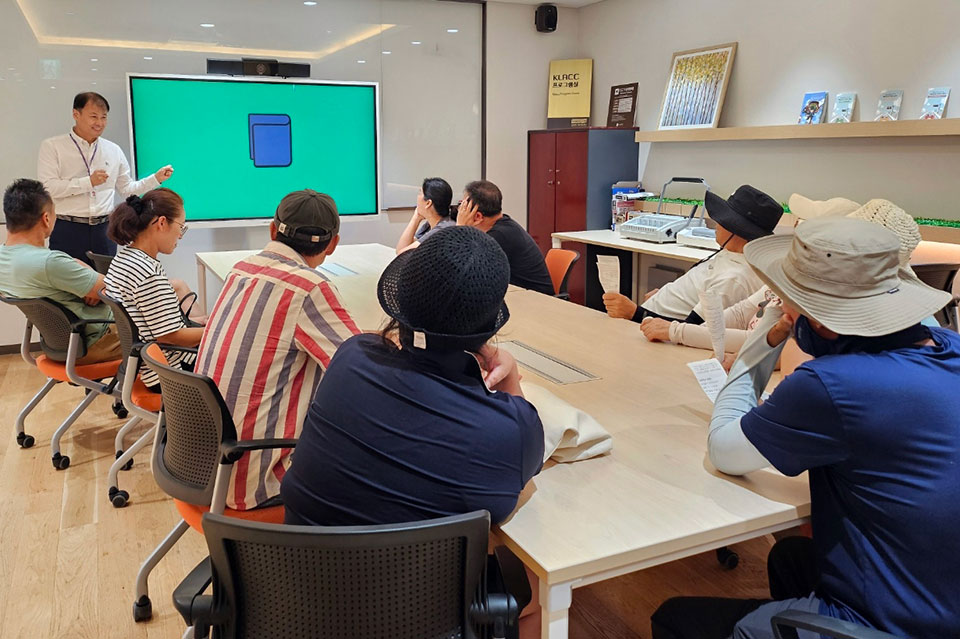
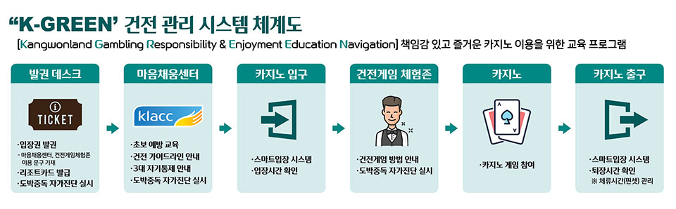
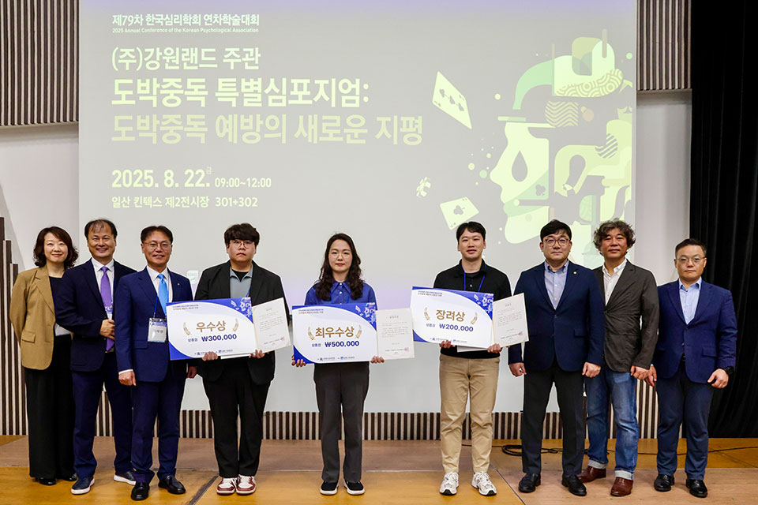
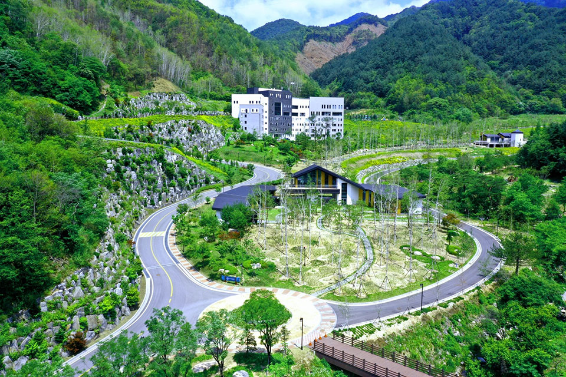
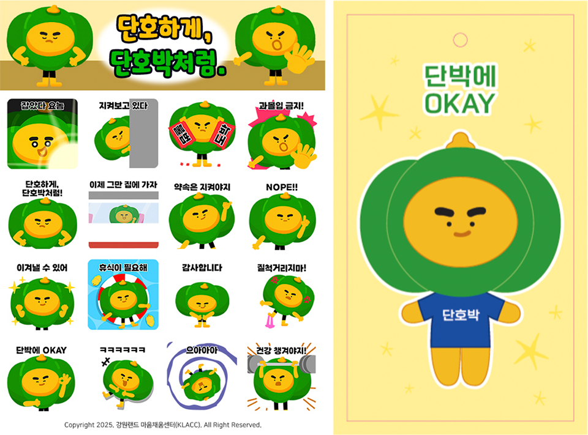
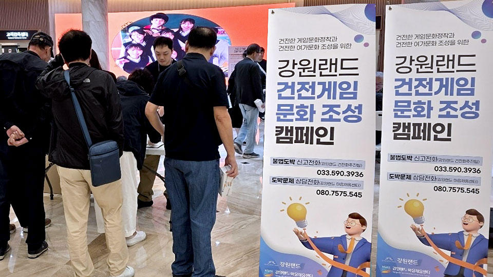
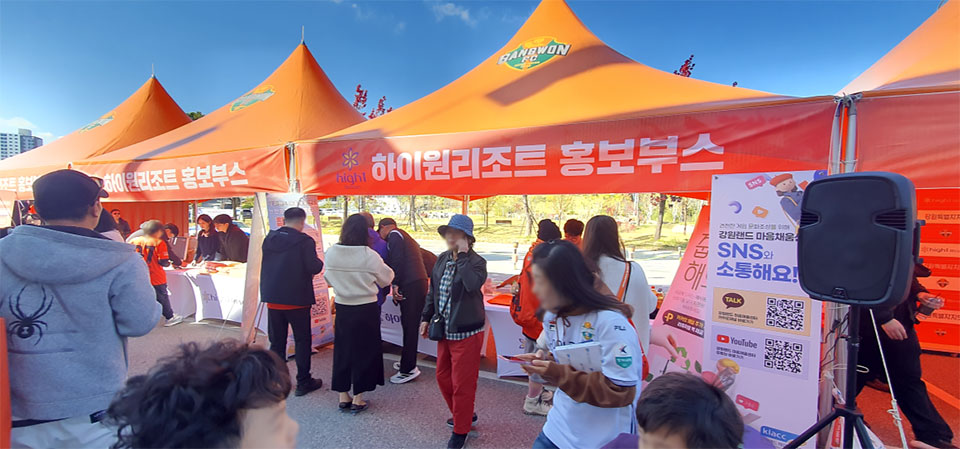
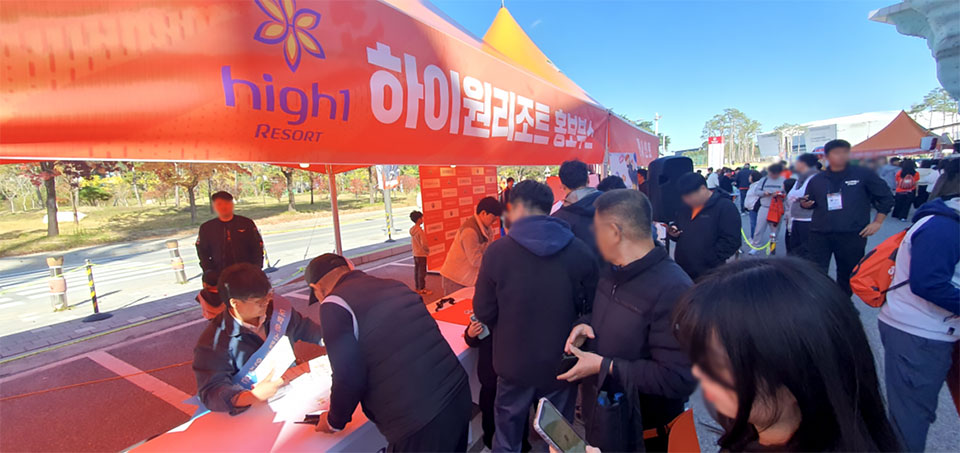
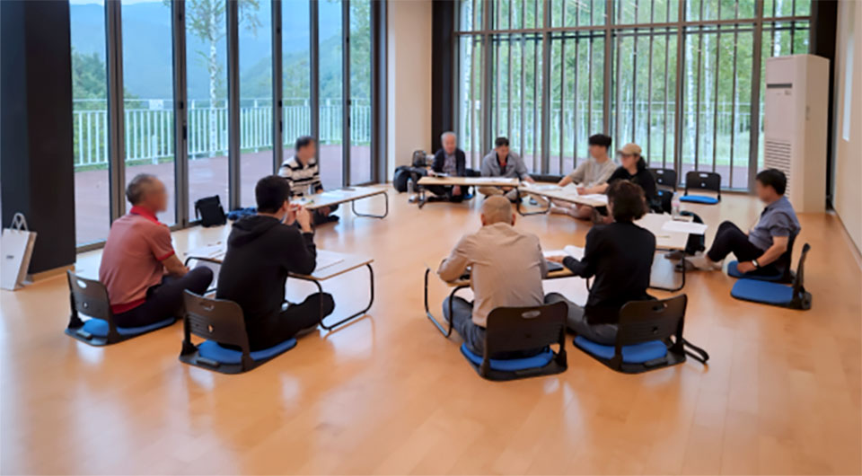
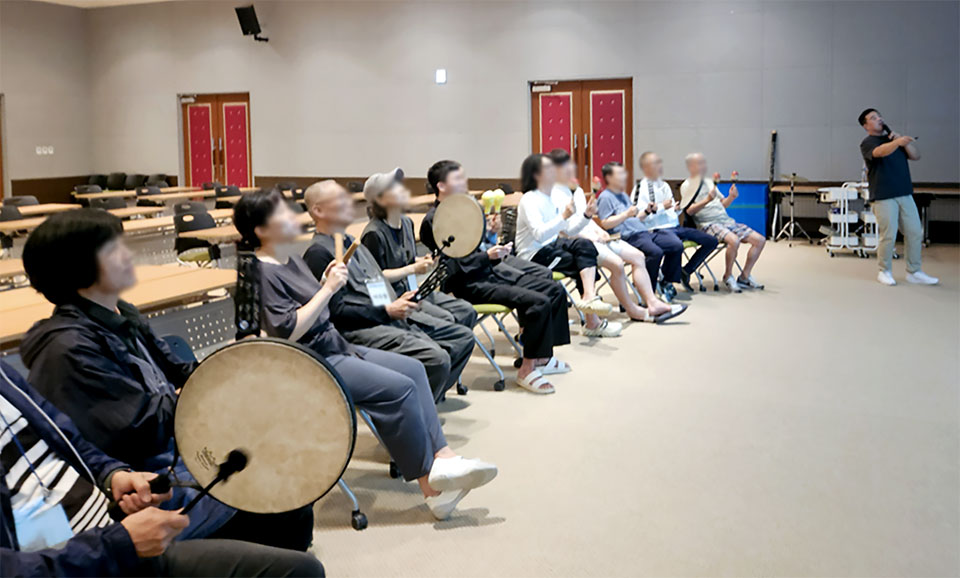

강원랜드(대표이사 직무대행 최철규)가 올해 3월부터 정식 운영을 시작한
K-GREEN(Kangwonland Gambling Responsibility & Enjoyment Education)
시스템이 큰 호응을 얻고 있다. 책임감 있고 즐거운 카지노 이용을 위한 이
교육 프로그램은 최근 1년 내 최초 방문객을 대상으로 게임 참여 전 자가
진단을 실시하고, 단계별 맞춤 교육과 건전 게임 체험 서비스를 제공해
고객의 건전 게임 인식을 사전에 강화하는 것이 핵심이다.
운영 초기인 3월 1천 명 수준이었던 이용 고객은 하계 성수기인 7월 약
3,600명으로 3.6배 증가했다. K-GREEN 시스템을 경험한 고객 대상 조사
결과, 만족도는 5점 만점에 4.5점으로 높게 나타났으며 긍정 인식도도
3.29점에서 4.62점으로 크게 상승했다. 고객들은 “게임 방식을 알고
시작하니 훨씬 덜 긴장됐다”, “강원랜드의 이용자 보호에 대한 신뢰가
생겼다.” 등 긍정적인 반응을 보였다.
특히 K-GREEN 시스템 활성화와 함께 고객이 스스로 게임일수, 시간, 금액을
제한하는 ‘자기통제 제도’ 이용 인원도 3월 40명에서 7월 398명으로 크게
늘어나, 강원랜드의 건전화 노력이 실질적인 게임 행동 조절로 이어지고
있다.
최철규 대표이사 직무대행은 “5개월 만에 이용객 1만 명을 달성해
기쁘다”며 “하반기에는 모바일 시스템 도입으로 고객 편의성을 높이고,
기존 고객 대상으로는 MI-CBT 상담기법을 활용해 실질적 게임 행동 조절로
이어질 수 있도록 노력하겠다”라고 밝혔다.

강원랜드가 일산 킨텍스에서 열린 ‘제79차 한국심리학회 연차학술대회’에서
‘도박중독 예방 특별 심포지엄’을 개최했다고 22일 밝혔다.
카지노를 건전 여가문화로 인식하고 올바른 이용과 중독예방 방안을
모색하기 위해 마련된 이번 심포지엄에는 한국심리학회 회원 등 약 300여
명이 참석했다. 강원랜드 마음채움센터(센터장 김대정, KLACC) 사업 소개와
학술연구 논문 발표, 우수논문 시상, 명사 특강이 진행됐다. 학술연구
발표에서는 KLACC 조상희 상담전문위원이 ‘명상 캠프가 도박중독자 정서
조절과 단도박 의지에 미치는 영향’에 대한 강원랜드·카이스트 공동연구
결과를 발표했으며, 6건의 우수논문 시상이 이어졌다. 발표 자료는 양측
홈페이지에 게재되고 향후 이용자 보호제도 수립에도 활용될 예정이다.
김경일 아주대학교 교수는 특강을 통해 ‘인지과학에서 바라보는 도박
행동’을 주제로 레저활동으로서의 카지노 인식에 대한 중요성을 강조했다.
최철규 직무대행은 “강원랜드 마음채움센터는 도박중독 예방
전문기관으로서 국내 학술 연구 저변을 넓히고, 사행산업 중독예방 문제에
선도적인 역할을 하겠다”라고 밝혔다.
강원랜드는 지난 6월 한국심리학회와 업무협약을 체결한 이후 ‘제 1회
강원랜드 중독예방 포럼’ 개최, ‘청소년 중독예방 아카데미’ 운영,
‘K-GREEN 건전관리시스템’ 운영 등 다양한 중독예방 활동을 전개하고 있다.

강원랜드가 국내 최초로 ‘체류형 도박문제 치유시설’ 설립에 나선다.
강원랜드는 12월 2일 한국도박문제예방치유원, 산림힐링재단과
업무협약(MOU)을 체결하고, 도박중독자를 위한 숙박형 치유시설 구축과
프로그램 개발을 공동 추진하기로 했다.
이번 협약은 정부의 ‘제4차 사행산업 건전발전 종합계획(2024~ 2028)’에
따른 후속 조치로, 세 기관은 도박중독 문제 해결을 위한 통합 치유 모델의
국내 도입을 목표로 한다. 현재 국내에는 상담 중심의 재활 체계만
존재하며, 중독자가 일정 기간 머물며 회복할 수 있는 거주형 치료시설은
전무한 실정이다.
시설은 웰니스 관광지로 선정된 강원랜드 산하 ‘하이힐링원’ 인프라를
활용해 조성되며, 산림·음악 치유, 요가·명상, 집단상담 등 다층적 회복
프로그램이 운영된다. 내년 9월부터 2차례에 걸친 시범 프로그램을 먼저
실시한 뒤, 운영 결과를 바탕으로 ‘문제도박자 체류형 치유시설 인증’을
추진하고 전국 확산 사례로 발전시킬 계획이다.
강원랜드는 이번 사업을 계기로 카지노 이용자 중심의 예방사업과 더불어
치유·재활까지 확장함으로써 사회적 책임을 강화하고, 한국형 도박문제
치유모델을 정립하는 데 주력할 방침이다.

강원랜드 마음채움센터(KLACC)가 도박문제 예방과 인식개선을 위해 선보인 카카오톡 이모티콘 ‘단호박’이 큰 인기를 얻고 있다. ‘단호박’은 도박의 유혹을 단호하게 거절한다는 의미를 담은 캐릭터로, 도박문제 예방 메시지를 재미있게 전달할 수 있도록 16종 이모티콘으로 제작됐다. 2025년 9월 도박문제인식주간을 맞아 시범 진행된 1,2차 배포에서는 총 3만 2,500건이 약 45분 만에 모두 소진됐으며, 이에 힘입어 센터는 12월 23일 전 국민을 대상으로 5만건 규모의 신규 배포 캠페인을 진행하고, ‘단호박’키링 인형 굿즈를 제작해 K-GREEN 건전관리시스템과 연계한 건전한 게임 문화 조성에 활용할 계획이다.

강원랜드가 운영하는 마음채움센터(KLACC)가 매주 화요일 카지노 앞
페스타프라자에서 카지노 출입 대기 고객을 대상으로 ‘2025년 도박문제
예방 홍보 캠페인’을 진행하고 있다. 캠페인에서는 카지노 게임 위험 수준
자가 진단 테스트(CPGI)를 통한 과몰입 위험 조기 발견, 중독치유 경험자인
동료상담사의 맞춤형 현장상담, KLACC 이용방법과 냉각기 제도·출입일수
자기통제 제도 관련 퀴즈 이벤트 등을 진행하며 도박문제에 대한 관심과
경각심을 높이고 있다.
특히 지난 16일에는 한국도박문제예방치유원과 공동 캠페인을 펼쳐 저위험
카지노 게임 가이드라인(10-4-10) 서약과 과몰입 방지를 홍보하며 기관 간
협업을 통한 예방 효율성을 강화했다.
최철규 직무대행은 “여가와 휴식으로서 카지노 게임을 이용하는 문화를
조성하고 도박문제 경각심을 높이기 위해 마련된 캠페인”이라며 “다양한
기관과의 협력을 바탕으로 중독 문제 예방에 최선을 다하겠다”라고 밝혔다.

강원랜드가 운영하는 하이원 리조트는 지난 11월 1일 강릉 하이원 아레나에서 열린 K리그1 35라운드 강원 FC와 전북 현대 모터스의 홈경기에서 ‘하이원 빅토리 데이’를 개최하고 성황리에 마쳤다고 밝혔다. 하이원 리조트는 지난 2009년부터 강원 FC 메인 스폰서로서 후원하며 지역과 상생하는 기업임을 알려 왔으며, 특히 올해는 팀 성적에 따른 인센티브를 추가해 후원 금액을 지난해보다 8억 원 증액한 48억 원을 후원한다.

경기장을 찾은 강원도민에게 하이원을 알리기 위한 홍보 부스를 운영하고 하이원 앱 가입 이벤트, 소셜 채널 구독 이벤트 등을 진행했으며, 강원랜드 마음채움센터(KLACC)는 경기 관람객을 대상으로 중독의 위험성과 예방법을 알리는 활동도 병행했다. 한편, 강원랜드는 올 6월 강원 FC와 스폰서십 계약을 체결해 강원 FC 홈 경기장인 ‘강릉종합운동장’을 ‘강릉하이원아레나’로 변경하는 네이밍 권리를 확보하는 등 강원 FC와 스포츠 마케팅 협업을 강화하고 있다.

강원랜드는 한국도박문제예방치유원(원장 신미경, 이하 예방치유원),
산림힐링재단(이사장 안기태, 이하 힐링재단)과 함께 국내 최초 도박문제
경험자 단기 체류형 치유 전문 시설 구축을 위한 2025년도 치유 캠프 시범
운영을 성공적으로 마무리했다.
단기 체류형 치유 시설은 강원랜드가 사행산업통합감독위원회(이하
사감위)와 예방치유원에 제안한 뒤 공동 현장 실사를 통해 우수한
자연환경과 시설, 전문 인력을 확인한 후 추진된 것으로, 해당 모델을
국내에 처음 도입한 사례라는 점에서 의미가 크다.
이번 치유 캠프는 강원도 영월군에 위치한 산림힐링재단에서 2차수로
진행됐으며, 1차는 9월 19일부터 21일까지 도박문제 경험자 9명을
대상으로, 2차는 10월 17일부터 19일까지 도박문제 경험자와 가족 23명을
대상으로 운영됐다.

프로그램은 MI-CBT 기반 집단 상담을 통해 재발을 유발하는 비합리적 도박
신념을 인식하도록 돕는 것을 목표로, 단도박 변화 동기 강화, 재발 방지
심리 교육, 도박 충동 대처 훈련 등을 중심으로 KLACC 김경훈 센터장을
비롯한 중독 분야 전문 상담진이 참여해 체계적으로 진행됐다.
대안 치유(힐링) 프로그램으로는 자기 돌봄의 중요성 인식과 삶의 태도에
대한 만족도 향상을 위해 힐링툴 테라피(요가와 명상), 어울림 해먹
테라피(산림 치유), 힐링 오케스트라(음악 치유) 등을 구성해 산림힐링재단
소속 전문가들의 지도 아래 운영했다.
그 결과 도박문제 경험자의 비합리적 도박 신념 점수는 33.7점에서
26.9점으로 약 25% 감소했고, 단도박에 대한 자신감은 20.5점에서
25.5점으로 약 19% 상승하는 등 치유 캠프의 효과가 수치로 확인됐다.
최철규 직무대행은 “강원랜드가 국내 최초로 도박문제 경험자 단기 거주
치료 프로그램을 운영하게 되어 뜻깊게 생각하며, 2027년까지 도박형 치유
전문 시설로서 인증을 받은 뒤 2028년에는 민간 부문까지 확장해 나가기를
기대한다”라고 말했다.